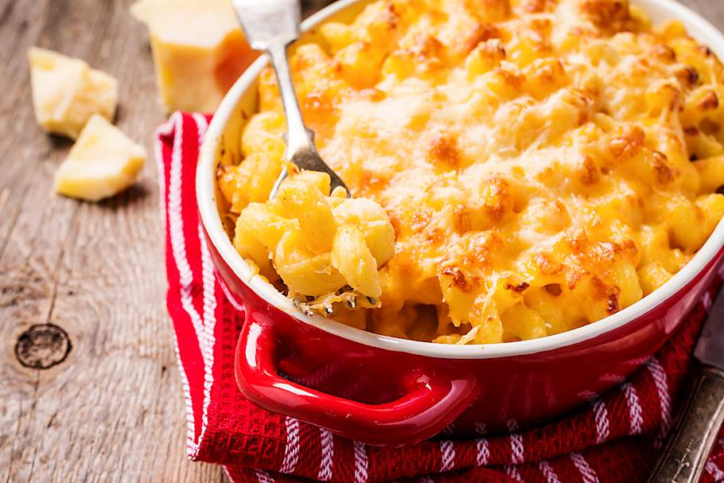

MAC AND CHEESE

Dish Origin
Macaroni and cheese is the ultimate comfort food. Loved by people of all ages, a steaming hot bowl of pasta and melted cheese has the potential to make
everything right with the world. Mac and cheese traces its roots to Italy. The "Liber de Coquina," or "Book of Cooking," an Italian cookbook from the
13th century, includes a recipe called de lasanis that foodie historians believe is the first macaroni and cheese recipe.
Ingredients
- 1 (16 ounce) package elbow macaroni
- ½ cup butter
- salt and ground black pepper to taste
- 1 (16 ounce) package shredded Cheddar cheese, divided
- 1 (5 ounce) can evaporated milk
- 2 eggs, well beaten
- 2 eggs, well beaten
- 2 cups whole milk
- 1 (10.5 ounce) can condensed Cheddar cheese soup (such as Campbell's®)
- 1 pinch paprika, or as desired (Optional)/li>
Directions
- Fill a large pot with lightly salted water and bring to a rolling boil. Stir in macaroni and return to a boil. Cook pasta uncovered, stirring occasionally,
until tender yet firm to the bite, about 8 minutes. Drain and transfer pasta to a slow cooker.
- Add butter to pasta and stir until melted; season with salt and pepper. Sprinkle about 1/2 of the Cheddar cheese over pasta and stir.
- Whisk evaporated milk and eggs together in a bowl until smooth; stir into pasta mixture.
- Whisk milk and condensed soup together in a bowl until smooth; stir into pasta mixture.
- Sprinkle remaining cheese over pasta mixture; garnish with paprika.
- Cook on Low for 3 hours.
- Serve hot and enjoy!